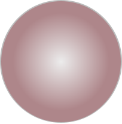
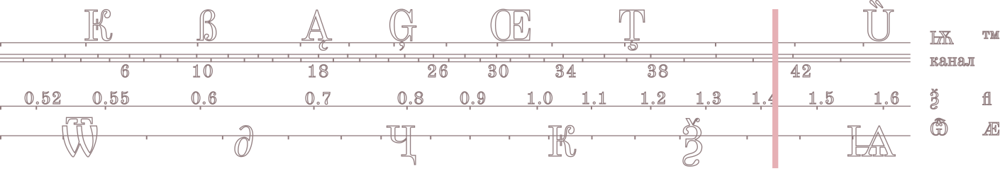
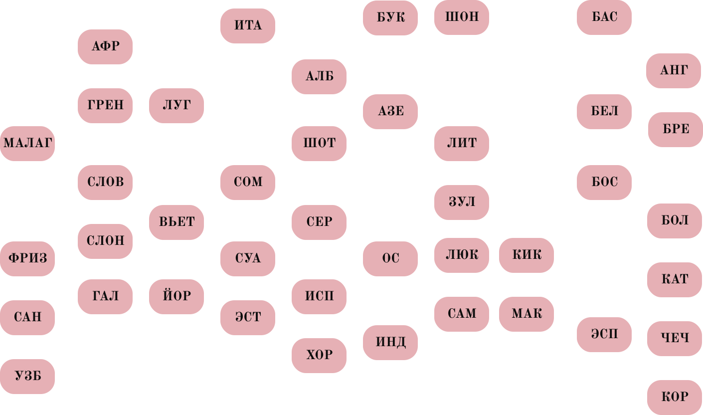

сейчас в эфире
Old Standard TT
шрифт - который слышно
О шрифте
Шрифт с засечками, вдохновлённый типографикой конца XIX - начала XX века. Высокий контраст между толстыми и тонкими штрихами, удлиненные засечки, вертикальное напряжение, что придаёт шрифту элегантный, но прочный вид.
В основном поддерживает латинскую, греческую и кириллическую письменности. Разработчик: Алексей Крюков
Начертания

факт БВ
диалог БВ
культ БВ
Бзик РВ
шум РВ
Гром РВ
флет ИВ
Хайп ИВ
Вруби ИВ
Глифы

Шрифт в прямом эфире

Языки вещания
